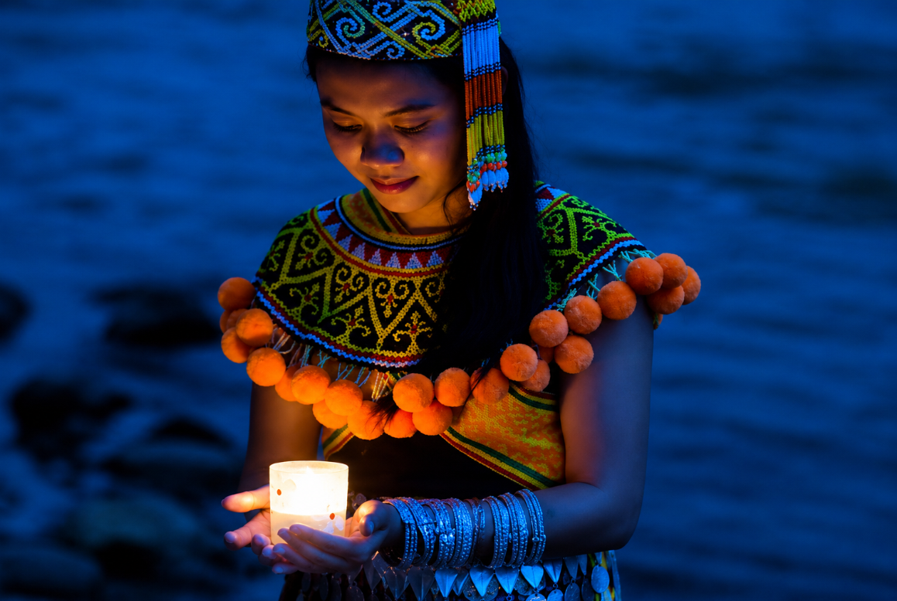
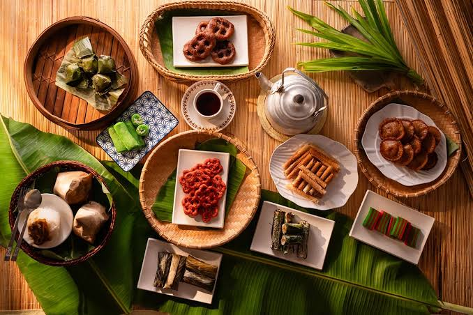
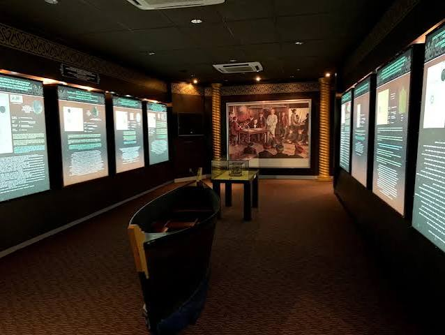
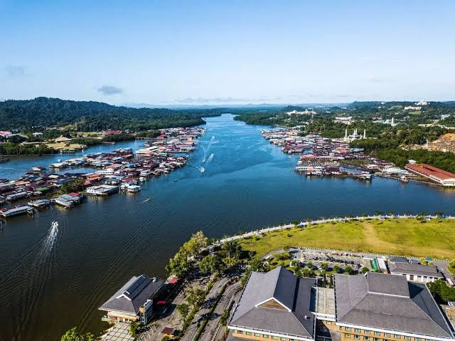
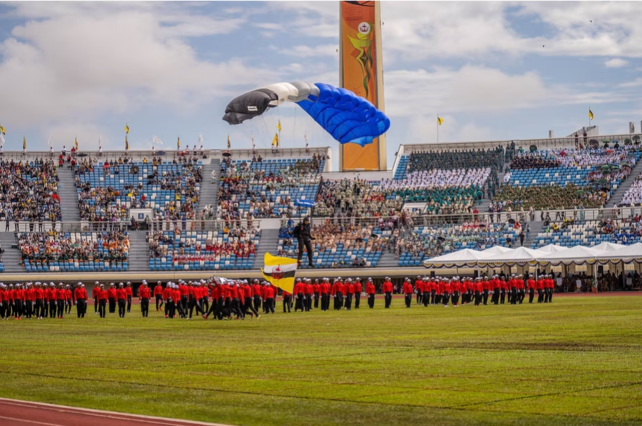
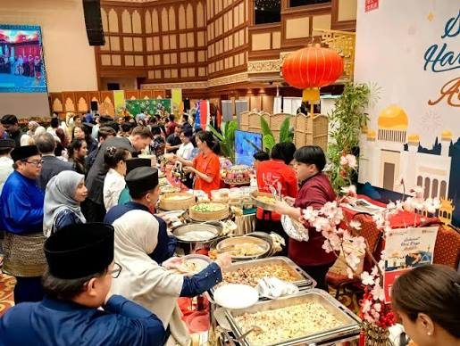

Discover Brunei
Explore the culture,traditions and the history of Brunei Darussalam
Discover Brunei's Culture and heritage

The Culture
Brunei is known as a Malay culture region that has
warm hospitality towards others as well as kindly introducing
their traditional customs, Tourist will feel more
welcoming experience with locals, celeberations and get to eat unqiue dishes
served to them.

The history of Brunei
The long history of Brunei started as a Malay sultnate.
Visitors today are able to learn about this by visiting
the museums and hitorical landmarks.

Local Lifestyle
One of the most interesting places to visit is the kampong ayer(Water Village)
which today still has communities of people living there as their houses and
schools are built on stilts above the Brunei River.

Brunei National Day
Brunei celebrates National day every year on the 23rd of February to commemorate the country's
independence from the british protection in 1984.

Sultan Haji Hassanal Bolkiah's birthday
His Majesty Sultan Haji Hassanal Bolkiah's birthday is celeberated on the 15th of July every year
as this occasion is marked with royal ceremonies, parades,performances and public celeberations.

Hari Raya celeberations
Hari Raya Aidilfitri is major celebartion around the country as it marks the end of Ramadhan,the
Islamic
holy month of fasting.